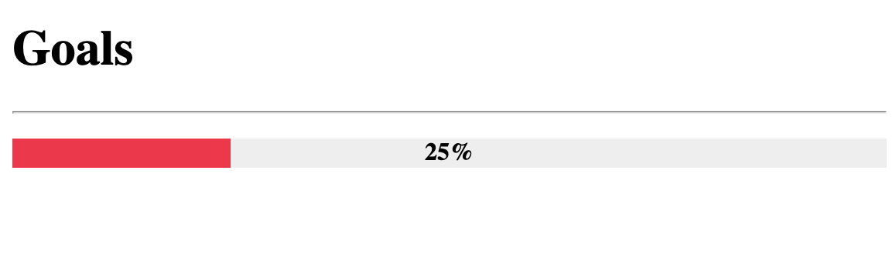

ProgressBar
Overview
ProgressBar is an extension that adds support for progress/status bars. It can take percentages or fractions, and it
can optionally generate classes for percentages at specific value levels. It also works with Python Markdown's built
in attr_list extension.
The basic syntax for progress bars is: [= <percentage or fraction> "optional single or double quoted title"]. The
opening [ can be followed by one or more = characters. After the = char(s) the percentage is specified as either
a fraction or percentage and can optionally be followed by a title surrounded in either double quotes or single
quotes.
[=0% "0%"]
[=5% "5%"]
[=25% "25%"]
[=45% "45%"]
[=65% "65%"]
[=85% "85%"]
[=100% "100%"]
Though progress bars are rendered as block items, it accepts attr_list's inline format.
markdown.extensions.attr_list must be enabled for the following to work.
[=85% "85%"]{: .candystripe}
[=100% "100%"]{: .candystripe .candystripe-animate}
[=0%]{: .thin}
[=5%]{: .thin}
[=25%]{: .thin}
[=45%]{: .thin}
[=65%]{: .thin}
[=85%]{: .thin}
[=100%]{: .thin}
The ProgressBar extension can be included in Python Markdown by using the following:
import markdown
md = markdown.Markdown(extensions=['pymdownx.progressbar'])
Styling with CSS
The general HTML structure of the progress bar is as follows:
<div class="progress progress-100plus">
<div class="progress-bar" style="width:100.00%">
<p class="progress-label">100%</p>
</div>
</div>
| Classes | Description |
|---|---|
progress |
This is attached to the outer div container of the progress bar. |
progress-bar |
This is attached to the inner div whose width is adjusted to give the visual appearance of a bar at the desired percentage. |
progress-label |
This is attached to the p element that will contain the desired label. |
progress-<integer>plus |
This is an optional class that indicates the percentage of the progress bar by increments defined by progress_increment. |
CSS Setup
You are able to style your progress bars as fancy or plain as you want. Below is just a basic example. Depending on existing styles in your page, it may or may not require tweaking.

<h1>Goals</h1>
<hr />
<p>
<div class="progress progress-20plus">
<div class="progress-bar" style="width:25.00%">
<p class="progress-label">25%</p>
</div>
</div>
</p>
///// collapse-code
.progress-label {
position: absolute;
text-align: center;
font-weight: 700;
width: 100%;
margin: 0;
line-height: 1.2rem;
white-space: nowrap;
overflow: hidden;
}
.progress-bar {
height: 1.2rem;
float: left;
background-color: #2979ff;
}
.progress {
display: block;
width: 100%;
margin: 0.5rem 0;
height: 1.2rem;
background-color: #eeeeee;
position: relative;
}
.progress.thin {
margin-top: 0.9rem;
height: 0.4rem;
}
.progress.thin .progress-label {
margin-top: -0.4rem;
}
.progress.thin .progress-bar {
height: 0.4rem;
}
.progress-100plus .progress-bar {
background-color: #00e676;
}
.progress-80plus .progress-bar {
background-color: #fbc02d;
}
.progress-60plus .progress-bar {
background-color: #ff9100;
}
.progress-40plus .progress-bar {
background-color: #ff5252;
}
.progress-20plus .progress-bar {
background-color: #ff1744;
}
.progress-0plus .progress-bar {
background-color: #f50057;
}
Options
| Option | Type | Default | Description |
|---|---|---|---|
level_class |
bool | True |
Enables or disables the level class feature. The level class feature adds level classes in increments defined by progress_increment. |
add_classes |
string | '' |
This option accepts a string of classes separated by spaces. |
progress_increment |
integer | 20 |
Defines the increment at which the level_class classes are generated at. |